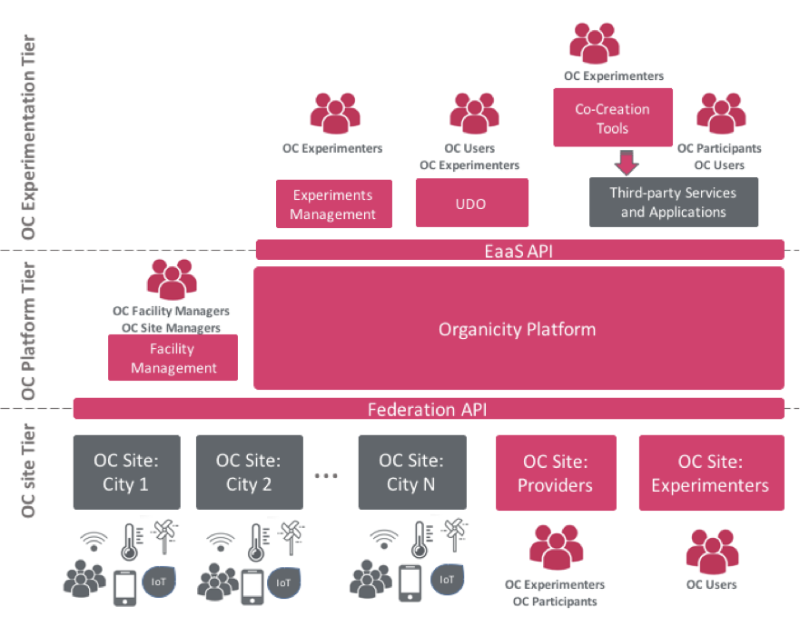

Welcome to the Organicity technical documentation. This web site will provide you detailed information about the services and tools provided by the Organicity EaaS (Experimentation as a Service) facility.
Overview of the technical environment
Architecture
As it can be seen in the following figure, three different tiers can be distinguished within the OC facility architecture:

Figure 1. OrganiCity facility high level architecture
- OC Experimentation tier The OrganiCity Experimentation tier consists of various components (APIs, services and tools) that enable and facilitate building applications and services for experimenters. If you are an experimenter, you will interact with Organicity through the APIs, services and tools of this layer.
- OC Platform tier It embraces the core of the technical facility. Among others, this layer implements data storage, accounting and security. Besides, this layer interacts with the other through APIs.
- OC Site tier It consists of a number of distributed storing entities, the so called OC sites. Among these sites, we can differentiate sites that belong to the Organicity infraestructure (providers and experimenters), and those provided by cities federating data into Organicity. If you are an experimenter, the interaction with the sites will to totally transparent, so that you will only rely on the components at the experimentation tier. If you want to become a new Organcity, this is the entry point for your federation, as will be commented later
Accounts and registration
To ensure that all interactions with and within the facility are authenticated with valid user credentials and access rights, Authentication, Authorization and Accounting (AAA) mechanisms have been implemented. Users will be enforced to use their own credentials to interact with the different APIs, services and tools. To start experimenting on top of the OC facility, the experimenters are encouraged to register themselves in the platform.
Once experimenters get registered within the platform, they will be assigned with the OC user role. The OC facility managers will assign the experimenters the OC experimenter role upon the acceptation of the corresponding request. To this end, you should send an email to helpdesk@organicity.eu, indicating the mail that you have been registered with and the experiment that you belong to.
Likewise, if you are federating a new Organicity (namely a new OC site), you will also have to contact the OC facility managers to obtanin permissions to manage your site. Again, you should send an email to helpdesk@organicity.eu, indicating the mail that you have been registered with and the OC site you are federating.
APIs
In general, the interaction with the whole technical environment is performed by using the a number of APIs aiming different purposes.
- Asset Discovery It facilitates exploration and inspection of available assets. In order to use this API and integrate it in your applications, take a look to the Asset Discovery API and the Asset Discovery Service.
- Asset Annotation As you create assets, you might want to annotate them with meaningful tags. The Annotaions API will allow you to do so.
- Permissions As mentioned before, the interactions with Organicity are required to be safe. Use the Permissions API in you applications and devices to interact with Organicity in a safe way.
- Datasource While experimenting you can require that Organicity stores some of the information you are generating to et historical values of it, send en email to helpdesk@organicity.eu for more information. Once the data is recorded, you can use the Datasource API to retrieve it.
In general the interaction with the different APIs will require authentication, what is perfomed by sending appropriate access tokens. Under the Tutorials tab you will find insightful explanations about how to obtain and work with these tokens: How To Access Token, How To Refresh A Token and How To Authenticate A User.
In order to test the different APIs, you may find the Tester API Application useful.
Services
Living on top of the APIs, a number of services will help you during your interaction with the facility, either if you are an experimenter or manager of an Organicity. You can find them under the Services tab:
- Urban Data Observatory - UDO The UDO provides a UI that allows experimeters and users in general to develop a deeper understanding of the federated city data sources that can be used in your experiments. It makes use of the Asset Discovery API enabling graphical search and exploration. Go to the Urban Data Observatory to see what it offers.
-
Data Annotation services These services simplify the process of creating meaningful knowledge from urban data assets by annotating them. Find more about Asset Annotations in the Services tabs. Besides you may find practice information about how to use it in the Tutorials: How To Create Annotation Tags, How To Annotate An Assets and How To Annotate An Asset Using Machine Larning
-
Experimenter Portal It is the entry to start the experimentation. From this portal, experimenters will be able to manage their experiments and to start interacting with other services. Go to the Experimenter Portal to see more.
-
Community Management This potal will allow to find people within the Organicity community according to their preferences and characteristics. Then you will be able to contact them to participate in your experiments, find in the Community Management more information and how it interacts with the Experimenter Portal.
-
Facility Manager Through this portal you will be able to manage advances features of the Organicity facility. It is not intended for experimenters, but if you are managing a new city, you will need the Facility Manager
Tools
Organicity tools are a set of developments aiming to cover experimentation needs from different perspectives. In this sense, while the Organicity facility is aiming general purpose, the tools are devoted to rather specific needs. You can find them under Tools tab:
- Scenarios This portal allows citizens to create, discuss and evaluate solutions for the city. See more...
- TSmarT It is a modular wireless communications platform designed to facilitate the development and implementation of M2M, monitoring and remote control applications in different markets. TSmarT devices are integrated with OrganiCity facility and therefore able to feed data to the OC platform, connecting them to the OC experimenters site. See more...
- TinkerSpace Toolkit for creating mobile services - Apps - without the need for extensive software training or experience. Tinkerspace builds on the idea of Component-based software engineering and Visual programming, with LEGO™ as an inspiration – it should be as easy to build a mobile app as to build a LEGO™ model. See more...
- Smartphone experimentation framework It is a complementary framework that facilitates experimenter to gather and process data from the sensors and communication interfaces of the smartphones of volunteers and use them to run experiments. See more...
- SensiNact aims at helping coders working with data streams from deployed data assets without the need to learn about the Organicity APIs. By using it, experimenters can interact with information of different data assets available in the different clusters, as well as within the scope of their experiments, and understand the data streams that they provide. The SensiNact IDE allows the creation of applications using a scripting tool (with Code Assist functionality). See more...
- Web socket processing library This library enables experimenters who have skills in the Processing programming language to easily connect to data streams from IoT devices in the OrganiCity facility. They may then actuate events in real-time as part of their Processing sketches. See more...
Data assets
Urban data, embracing from IoT devices to social events, are modeled inside Organicity as assets. In order to cover a large range of different urban data, OC assets are defined in a generic way following NGSI9/10 specification. Either if you are an experiment or want to federate data into he facility as a new Organicity, you will have to model your resources as assets. Here you will find a thorough description of the data model along with meaningful examples that will help you to model your data.
Currently there are federated assets from the city sites: Aarhus (Denmark), London (UK) and Santander (Spain) ( More details)
If you are an experimenter, you will have to knwo how to manage your assets. Go to the Tutorials to learn: How To Push An Asset To The Experimenters Site and How To Update And Delete An Asset.
If you are managing a new city the tutorial How To Oc Site explains the steps to get your data federated into Organicity.
Experimentation overview
In order to avoid getting lost among the different APIs, services and tools, here we present minimal guidelines to follow to start the experiment:
- Go to the Experimenter Portal and create one experiment and one applications as indicated in the documentation. As you will see, the portal offers more functionalities and interactions with other services, we encourage you to check them.
- Once you have an experiment, it is time to generate urban data by creating assets. This can be done directly through the portal in a graphical way, but in general you will prefer to do it programatically. To do so, go to How To Push An Asset To The Experimenter Site and follow the instrauctions therein. If properly generated, you will be able to see your assets in the Urban Data Observatory
- During your experiment your applications may require retrieving data assets, either created by your experiment of other urban data available. Use the Asset Discovery API and the Asset Discovery Service to build your application.
- Besides, you can enrich the information of your assets by using the Annotation Service or modify your assets as described in How To Update And Delete An Asset
Apart from these steps, you can find much more in the Tutorials and use the Tools for tailored solutions.
New Organicities (OC sites)
If you are going to federate a new OC site, you should follow the intructions provided in How To Oc Site. It is worth highlighting that you need to host a server (your OC site) that will feed data into the Organicity facility core.
Site managers will be given special rights to manage their sites and data for different urban services within their sites. This will be done through the Facility Manager.
Support
For resolving technical questions, reporting specific issues/bugs and discussion possible extensions in the APIs, services and tools of Organicity, you have different alternatives:
- Generic questions. Use the Public Forum for generic questions.
- Generic issues. If you find a generic issue, you can report it and keep track at organicityeu.github.io/issues
- Specific issues related to a particular tool. Browse the various repositories at https://github.com/OrganicityEu/ and then report the issue in the proper one.